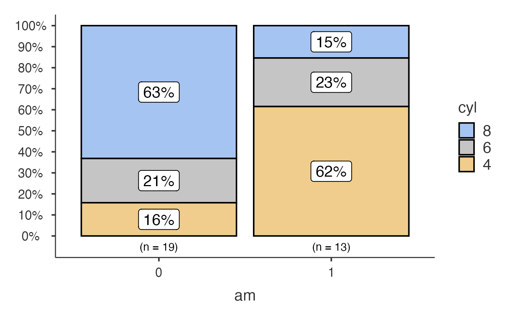
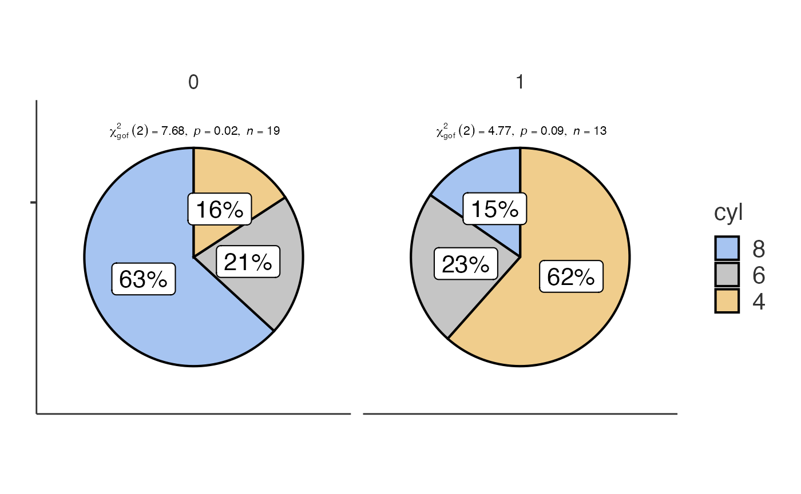
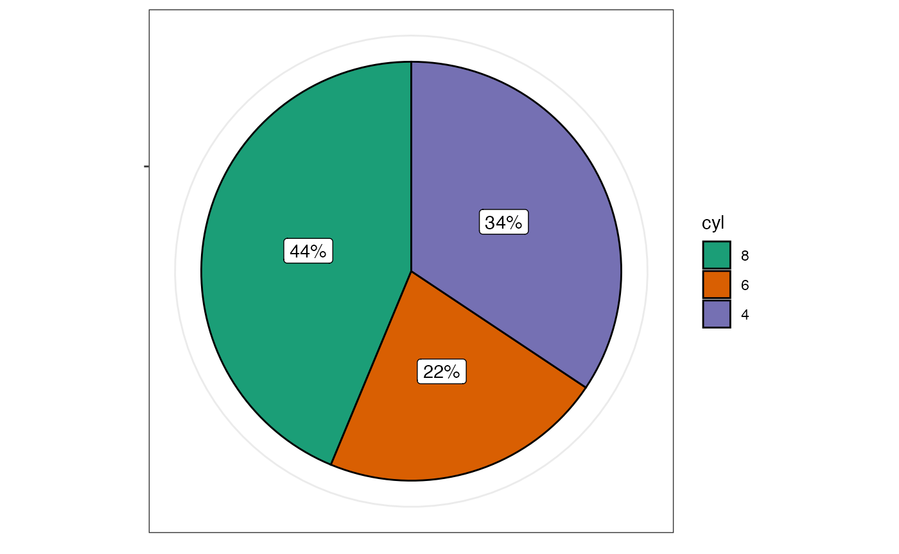
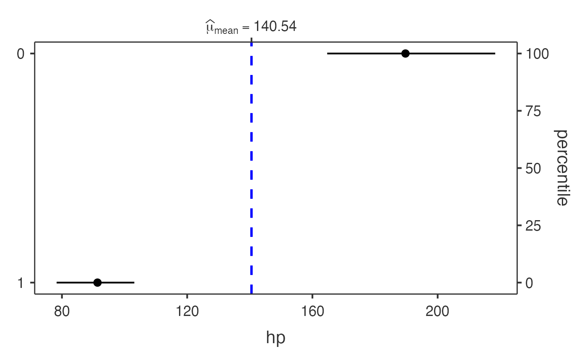

Categorical Plot Functions
ClinicoPath Development Team
2025-10-09
Source:vignettes/legacy/08-categorical-plots-legacy.Rmd
08-categorical-plots-legacy.RmdThis vignette demonstrates the functions designed for categorical
data: jjbarstats(), jjpiestats() and
jjdotplotstats().
Bar charts with jjbarstats()
jjbarstats() creates a bar chart and automatically
performs a chi-squared test to compare the distribution of two
categorical variables. The example below compares the number of
cylinders (cyl) across transmission types
(am).
jjbarstats(data = mtcars, dep = cyl, group = am, grvar = NULL)
#>
#> BAR CHARTS
#>
#> <div style='padding: 15px; background-color: #f8f9fa; border-left: 4px
#> solid #007bff; margin: 10px 0;'><h4 style='color: #007bff; margin-top:
#> 0;'>📊 About Bar Chart Analysis
#>
#> Purpose: Compare the distribution of categorical variables across
#> groups using statistical testing.
#>
#> When to Use:
#>
#> Diagnostic Tests: Compare test results (positive/negative) across
#> patient groupsTreatment Response: Analyze response rates across
#> different treatmentsBiomarker Expression: Compare expression levels
#> (low/medium/high) by clinical factorsRisk Factor Analysis: Examine how
#> risk factors relate to outcomes
#>
#> Output Includes:
#>
#> Visual bar chart with statistical annotationsChi-square or appropriate
#> statistical test resultsEffect size measures and confidence
#> intervalsPost-hoc pairwise comparisons (when >2 groups)
#>
#> character(0)
#>
#> character(0)
#>
#> character(0)
#>
#> character(0)
#>
#> Bar chart analysis comparing cyl by am.
#>
#> Data prepared: 32 observations (missing values will be handled by
#> statistical functions) (cached).
#> Warning: The `size` argument of `element_line()` is deprecated as of ggplot2 3.4.0.
#> ℹ Please use the `linewidth` argument instead.
#> ℹ The deprecated feature was likely used in the jmvcore package.
#> Please report the issue at <https://github.com/jamovi/jmvcore/issues>.
#> This warning is displayed once every 8 hours.
#> Call `lifecycle::last_lifecycle_warnings()` to see where this warning was
#> generated.
Pie charts with jjpiestats()
jjpiestats() is similar to jjbarstats() but
displays the results as a pie chart.
jjpiestats(data = mtcars, dep = cyl, group = am, grvar = NULL)
#> Warning in value[[3L]](cond): Clinical preset application failed: {error}.
#> Using custom settings. argument is missing, with no default
#> Warning in chisq.test(contingency_table): Chi-squared approximation may be
#> incorrect
#>
#> PIE CHARTS
#>
#> Pie Chart Analysis
#>
#> What this analysis does: Generates pie charts with statistical
#> analysis to compare categorical variables across groups. Performs
#> chi-square tests, Fisher's exact tests, or other appropriate
#> statistical tests based on your data.
#>
#> When to use: Use when you want to visualize proportions of categorical
#> outcomes and test for significant differences between groups. Ideal
#> for diagnostic test results, treatment responses, or biomarker
#> categories.
#>
#> Current configuration: This analysis uses custom settings for pie
#> chart generation with statistical testing.
#>
#> What you'll get: Interactive pie charts with statistical test results,
#> confidence intervals, and effect sizes. Optional grouped analysis for
#> complex study designs.
#>
#> Analysis Configuration
#>
#> • Analyzing variable: cyl
#>
#> • Comparing across groups: am
#>
#> • Statistical method: Parametric
#>
#> • Sample size: 32 observations
#>
#> Statistical Assumptions & Warnings
#>
#>
#>
#> General Requirements
#>
#>
#> ✓ Data should be categorical (factors or characters)
#> ✓ Observations should be independent
#> ✓ For statistical tests: adequate sample size in each category
#>
#>
#>
#> Warnings
#>
#> ⚠️ Expected cell counts < 5 detected. Consider using Fisher's exact
#> test (nonparametric option) for more reliable results.
#>
#>
#>
#> How to Interpret Your Results
#>
#> Statistical Method: Chi-square test results show whether group
#> differences are statistically significant. Look for p-values < 0.05
#> for significant associations.
#>
#> Clinical Context: Interpret results in the context of your specific
#> research question and clinical setting.
#>
#> General Guidance: Pie charts show proportions visually - larger slices
#> represent higher frequencies. Statistical tests determine if observed
#> differences are likely due to chance or represent true group
#> differences.
#>
#> Copy-Ready Report Template
#>
#> <div style='background-color: #f8f9fa; padding: 15px; border: 1px
#> solid #dee2e6; border-radius: 5px;'>
#>
#> Methods:
#>
#> We compared {outcome} distributions across {groups} using {method}.
#> cyl am chi-square test Statistical significance was set at p < 0.05.
#> All analyses were performed using jamovi statistical software.
#>
#> Results:
#>
#> [Results will be automatically filled when analysis is complete]
#>
#> Copy the text above and modify as needed for your manuscript or
#> report.
#>
#> Pie chart analysis ready Variable: cyl, grouped by am.
#>
#> Data prepared: 32 observations (cached).
#>
#> Statistical method: Parametric analysis.
Dot charts with jjdotplotstats()
jjdotplotstats() shows group means using a dot plot. In
this example we plot horsepower (hp) by engine
configuration (vs).
jjdotplotstats(data = mtcars, dep = hp, group = vs, grvar = NULL)
#>
#> DOT CHART
#>
#> Processing data for dot plot analysis...
#>
#> ℹ️ 1 potential outlier(s) detected in hp
#>
#> 📊 Analysis summary: 2 groups, 32 total observations
#>
#> <div style='background-color: #f8f9fa; padding: 15px; border-left: 4px
#> solid #007bff; margin: 10px 0;'><h4 style='color: #007bff; margin-top:
#> 0;'>📊 Clinical Interpretation
#>
#> Analysis: This dot plot shows the distribution of hp across different
#> vs categories using a t-test for comparing means.
#>
#> Sample: Group '0' (n=18), Group '1' (n=14)
#>
#> Results: Group '0' shows a mean of 189.72 vs Group '1' with a mean of
#> 91.36.
#>
#> *💡 Tip: The statistical significance and effect size will be
#> displayed in the plot subtitle when the analysis completes.*
#>
#> <div style='background-color: #fff3cd; padding: 15px; border-left: 4px
#> solid #ffc107; margin: 10px 0;'><h4 style='color: #856404; margin-top:
#> 0;'>🔍 Data Assessment & Recommendations
#>
#> ℹ️ Moderate sample sizes (n < 30). Non-parametric tests may be more
#> appropriate.
#>
#> ✓ Approximately normal distribution suitable for parametric tests.
#>
#> ✓ Parametric test is appropriate for your data.
#>
#> <hr style='border-color: #ffeaa7;'>
#>
#> Sample sizes by group:
#> 0 : n = 18
#> 1 : n = 14
#>
#> <div style='background-color: #e7f3ff; padding: 15px; border-left: 4px
#> solid #0066cc; margin: 10px 0;'><h4 style='color: #0066cc; margin-top:
#> 0;'>📝 Copy-Ready Report Sentence
#>
#> <div style='background-color: white; padding: 10px; border: 1px dashed
#> #0066cc; font-family: "Times New Roman", serif;'>
#>
#> A independent samples t-test was performed to compare *hp* between
#> *vs* groups. The dot plot visualization shows the distribution and
#> central tendencies across groups, with statistical results displayed
#> in the plot subtitle including effect size and significance testing.
#>
#> *💡 Click to select the text above and copy to your report.
#> Statistical values will be automatically filled when the analysis
#> completes.*
#>
#> character(0)
#>
#> character(0)
Each function returns a results object whose plot
element contains the ggplot2 visualisation.